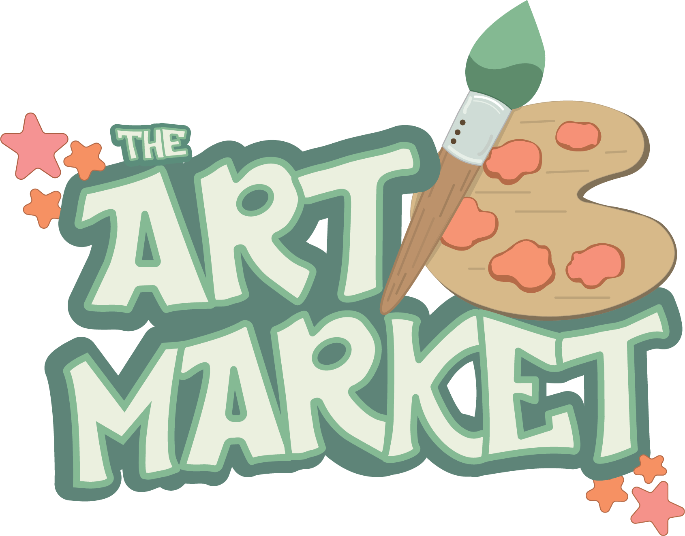
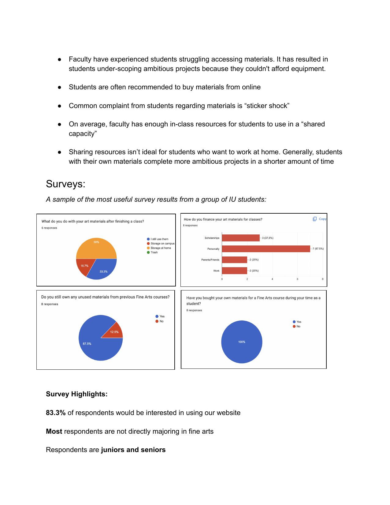
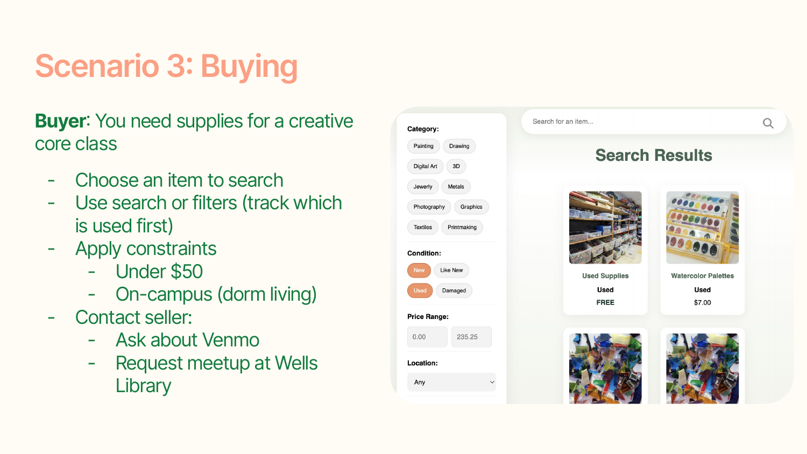
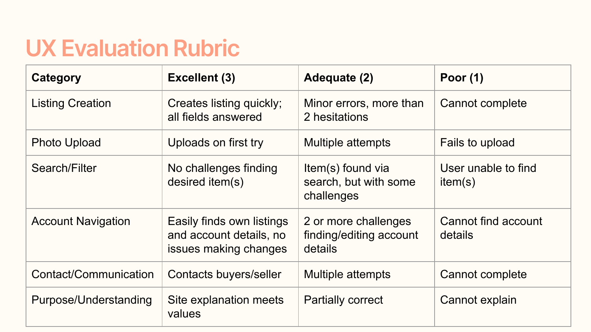
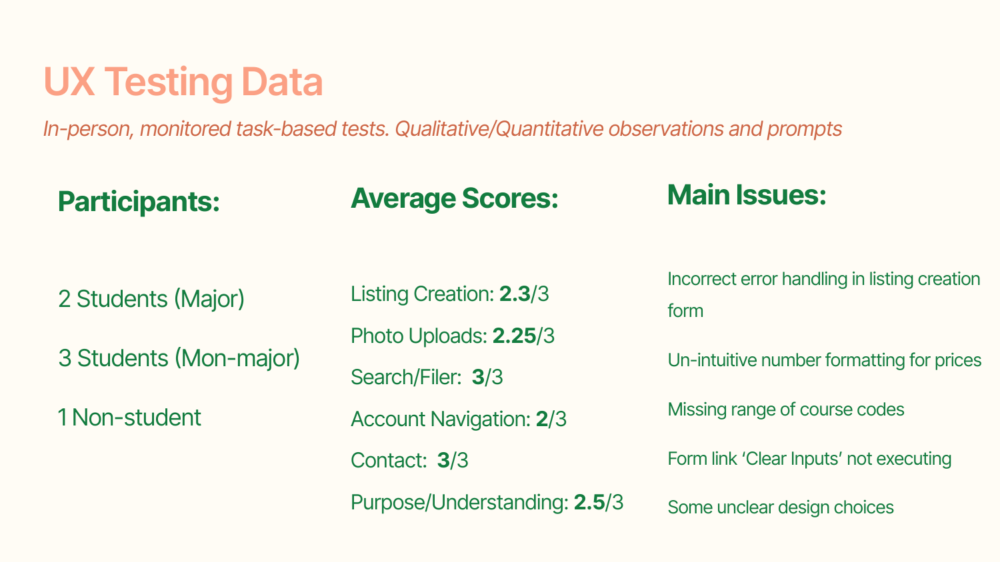
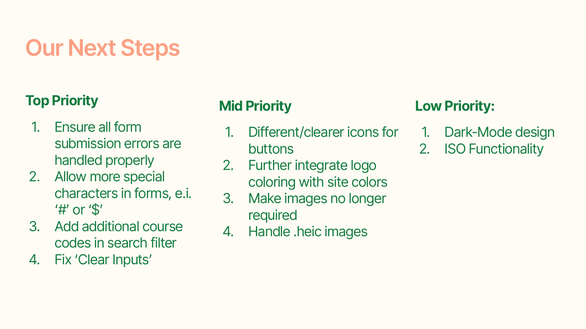

UX research · Product management · Backend integration
Waste less. Create more.
Turning a campus sustainability problem into a researched, tested, and working marketplace for art materials.

Good materials were being discarded while other students needed them.
The barrier was not a lack of materials. It was a lack of connection between students who had them and students who needed them.
I designed and conducted interviews with fine arts faculty, then synthesized those conversations alongside an eight-person student survey. Faculty described students reducing the ambition of their work because of material costs, while the survey showed that leftover supplies were common. Together, the findings reframed “waste” as an access problem we could address with a campus marketplace.

Research became requirements the team could build against.
I translated interview and survey findings into personas, user stories, acceptance criteria, and a prioritized roadmap. I owned the Browse Supplies and Course Supply Lists epics and helped keep the team’s files, decisions, and timeline organized as the product moved from planning into implementation.
During the build, I created the browse page, integrated its backend behavior, and made targeted structural changes using the team’s existing interface elements. This was not a visual-design ownership role; it was a chance to keep research intent intact through requirements, architecture, and working code.
Test the complete exchange, not isolated screens.
I designed an in-person, monitored usability study around three realistic scenarios: creating an account, listing leftover clay for $15, and finding supplies under $50 for an on-campus exchange. Participants used their own devices and received no procedural guidance, letting us observe hesitation, detours, time, and clicks alongside task completion.
Each task used a three-point scale: 3 for quick first-attempt completion, 2 for completion with minor errors or retries, and 1 when the participant could not complete the task. The rubric made patterns comparable without pretending a small qualitative study had statistical precision.


Finding supplies was easy. Managing a listing was not.
Six participants (two fine arts majors, three non-majors, and one non-student) completed the Sprint 12 study. Search and filtering earned a perfect task score, validating the browse experience. Lower scores around listing creation and account navigation exposed friction in error handling, price formatting, course codes, and where users expected to find their own listings.
Behavior mattered as much as the scores. Participants understood the marketplace quickly, but several imagined using it for one-off purchases, giveaways, or exchanges. That suggested continued engagement would depend on fresh inventory and lightweight transactions (not only a polished listing form).

Turn observations into a backlog, not a wish list.
I synthesized the sessions into concrete priorities based on task impact. Form errors, special-character support, course-code handling, and a reliable “clear inputs” action became high priority. Icon clarity, image handling, and file-format support came next; requests such as dark mode stayed low priority.
We also separated shipped adjustments from future recommendations. The team addressed the homepage prompt, account tabs, empty-filter behavior, and several structural issues during the project. Other findings remained documented rather than being presented as completed work.

A working marketplace (and a clearer model for research-led delivery).
The Art Market reached the 2026 Informatics Capstone Fair as a complete service, where students and professors asked when it would become available. The temporary deployment is no longer online and the university owns the project, but the walkthrough preserves the final experience.
My strongest contribution was the connective work: framing the opportunity, converting evidence into requirements, designing the evaluation, and translating findings into priorities. Building the browse page and its backend integration gave me enough implementation context to make those research recommendations practical for the team.